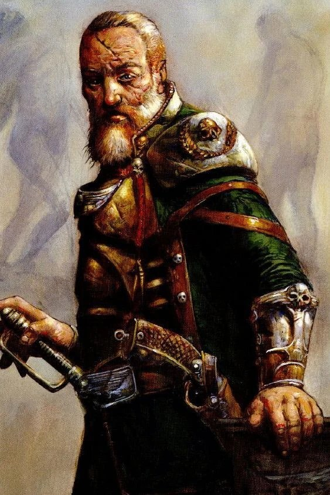
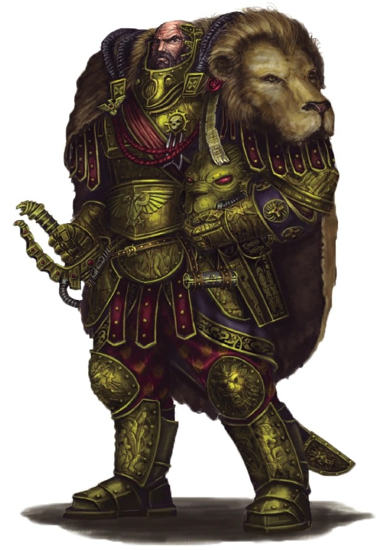

Warmaster
| Warmaster | |
|---|---|
| Supreme commander of an Imperial crusade | |
 Horus, the first Warmaster, in the armour he wore after Ullanor | |
| Style | Warmaster |
| Appointer | The Emperor of Mankind (M31); the High Lords of Terra (since M31) |
| Term length | For the duration of a crusade |
| Formation | c. 000.M31, the Triumph of Ullanor |
| First holder | Horus |
| Notable holders | Slaydo; Macaroth; Tiber Achilus |
| Ranks below | Lord Commander Militant |
| Chaos usage | |
| Claimant | Abaddon the Despoiler, Warmaster of Chaos |
Warmaster is a title and military office of the Imperium of Mankind. It was created by the Emperor of Mankind at the Triumph of Ullanor in 000.M31, at the close of the Great Crusade, when he named his son Horus commander of all the Imperium's armies and withdrew to Terra. Horus's treachery in the Horus Heresy made the title infamous.[1][2]
Since the Heresy the office has been revived in a lesser form. The High Lords of Terra grant it to the commander of a great crusade drawing on the forces of many sectors, such as the Sabbat Worlds Crusade or the Achilus Crusade, and the holder commands every Imperial service in the theatre. Because of its association with Horus, the title is granted rarely and is regarded by many as ill-omened.[3]
The servants of Chaos use the title for a lord strong enough to unite their warring factions as Horus once did. Abaddon the Despoiler of the Black Legion has claimed it as Warmaster of Chaos since the early 31st millennium.[4]
Origin
[edit]For most of the Great Crusade the Emperor led the war in person. After the defeat of the Orks of Ullanor he announced that he would return to Terra, where he had begun secret work beneath the Imperial Palace. At the Triumph that followed the campaign, before an assembly of primarchs, Legions and armies, he named Horus Warmaster and ordered that all his armies and generals take orders from Horus as they would from himself. On the advice of Sanguinius, the Emperor also suggested that the Luna Wolves take the name Sons of Horus to mark their primarch's new rank; the change was made in 003.M31.[1]
The appointment placed Horus above his brother primarchs, several of whom resented it. Some at Ullanor had expected the honour to go to Sanguinius or Roboute Guilliman. On the same occasion the Emperor announced that the Crusade would be governed from Terra by the Council of Terra, made up of civilians, and the Legions would answer to it. Imperial historians count the two announcements together among the causes of the Heresy.[2]
Horus as Warmaster
[edit]Horus commanded the Great Crusade from his flagship, the Vengeful Spirit, for some years, from 000.M31. He was wounded on Davin in 004.M31 by a daemon-bound blade and, in the rites that healed him, accepted the offer of the Ruinous Powers to overthrow his father. As Warmaster he had the authority to direct the Legions and armies where he chose, and he used it to gather the traitor Legions and send loyalists into traps, including the virus bombing of Isstvan III in 005.M31 and the Drop Site Massacre in 006.M31.[2]
The war that followed ended at the Siege of Terra in 014.M31, where the Emperor destroyed Horus aboard the Vengeful Spirit and was himself placed on the Golden Throne. No loyalist held the title during the Heresy. The supreme authority on Terra was exercised by the Regent Malcador the Sigillite and the Praetorian Rogal Dorn, and after the Siege by Guilliman as Lord Commander of the Imperium.[2]
Imperial Warmasters
[edit]After the Heresy the title was not used for centuries. It was revived for the commanders of great crusades, when the resources of several sectors and every arm of the Imperium had to be placed under one hand. In the 41st millennium the High Lords grant it, and by formula the holder is said to receive his command from the Emperor himself. There is rarely more than one Warmaster in the Imperium at a time.[3]
A Warmaster commands the Astra Militarum, the Imperial Navy and allied forces in his crusade, and may direct Space Marine Chapters and agencies such as the Inquisition and the Ecclesiarchy where they agree to serve. The office ranks below only the Lord Commander Militant of the Astra Militarum among the military commands of the Imperium. The title is usually borne by a general officer of the Astra Militarum, though a Navy officer or a Chapter Master leading a great force may hold it.[3]
Holders recorded in the archives of the Officio Militaris include:
- Demetrius, commander of the Salonika Crusade in 733.M38.
- Ingenus, whose capture by Drukhari raiders in 845.M41 widened the Dimmamak War. The Munitorum raised a further forty thousand regiments in response and assigned personal bodyguards to all senior officers of the Astra Militarum from that time.
- Slaydo, who led the Sabbat Worlds Crusade from 755.M41 and won the victory at Balhaut in 765.M41 before his death.
- Macaroth, his successor in the Sabbat Worlds from 765.M41.
- Tiber Achilus, who gained command of the Achilus Crusade into the Jericho Reach, drawing on the forces of the Calixis Sector.
- Hokaeto, Supreme Imperial Commander of the Desmaxian Crusade.

Relation to the Lord Solar
[edit]The office of Lord Solar, or Lord Commander Solar, is distinct. It is the supreme military command of the Segmentum Solar and a standing appointment, not a crusade command. Its most famous holder, Lord Solar Macharius, is often called a Warmaster in popular histories of his crusade, and Administratum usage has at times treated the two titles as equivalent. Officio Militaris records keep them separate.[3][a]

Warmaster of Chaos
[edit]In the last hours of the Siege of Terra, when the Custodian Constantin Valdor wounded Ezekyle Abaddon aboard the Vengeful Spirit, he saw a vision of Abaddon's future as Warmaster of Chaos; Ordo Malleus analysts hold that the gods had chosen Horus's successor before Horus was dead. After the Siege Abaddon took Horus's Talon and command of the Sons of Horus, but did not take Horus's title at once.[5]
The title was disputed in the Legion Wars that followed, in the 31st millennium, in the Eye of Terror. The Emperor's Children grew a clone of Horus from his stolen body, intending it to lead the traitors; Abaddon destroyed it at the Battle of Harmony. He then renamed his Legion the Black Legion and declared himself Warmaster, a claim strengthened when he bound the daemon sword Drach'nyen and later by the Black Crusades he led against the Imperium.[4]
Abaddon's claim has never been universally accepted. Other lords of the traitor Legions, and daemon princes such as the primarchs who fell with Horus, have refused to follow him or followed him only for a single crusade. Any lord who unites a large host of the Dark Gods' servants may take the title for a time. After the Fall of Cadia in 999.M41 and the opening of the Great Rift, Abaddon's authority stands higher than at any time since Horus.[4]
Legacy
[edit]In the Imperium the title carries both prestige and suspicion. Officers who hold it command more power than almost anyone outside the High Lords, and the precedent of Horus is often raised against them by rivals. Some regiments and Navy crews regard the appointment of a Warmaster as an omen of hard fighting.[3]
Timeline
[edit]| Date | Event |
|---|---|
| 000.M31 | Office created at the Triumph of Ullanor; Horus named Warmaster and the Emperor withdraws to Terra. |
| 003.M31 | The Luna Wolves renamed the Sons of Horus. |
| 004.M31 | Horus wounded on Davin and turned to Chaos. |
| 005.M31 | Horus uses his authority to begin the Horus Heresy at Isstvan III. |
| 006.M31 | The Drop Site Massacre on Isstvan V. |
| 014.M31 | Horus slain aboard the Vengeful Spirit in the Siege of Terra; Constantin Valdor's vision of Abaddon as Warmaster of Chaos. |
| M31 | Abaddon destroys the clone of Horus at Harmony in the Legion Wars, founds the Black Legion and claims the title. |
| 781.M31 | Abaddon leads the first Black Crusade. |
| 733.M38 | Warmaster Demetrius commands the Salonika Crusade. |
| 755–765.M41 | Warmaster Slaydo leads the Sabbat Worlds Crusade until his death after Balhaut; Macaroth succeeds him. |
| 845.M41 | Warmaster Ingenus captured by Drukhari raiders. |
| 999.M41 | The Fall of Cadia and the Great Rift raise Abaddon's authority higher than at any time since Horus. |
See also
[edit]Notes
[edit]- ^ Some Administratum documents of the late 41st millennium describe "Lord Commander Solar" as the formal name under which the Warmaster's rank is conferred, to avoid the name of Horus. The Officio Militaris does not accept this usage.
References
[edit]- ^ a b Oliton, Mersadie (c. 005.M31). Chronicles of the Luna Wolves. Remembrancer Order.
- ^ a b c d Chronicles of the Heresy (sealed). Logos Historica Verita, Terra.
- ^ a b c d e Lexicanum Martialis. Officio Militaris.
- ^ a b c Liber Haereticus: The Black Legion (rev. M41). Ordo Malleus (sealed).
- ^ Records of the Siege of Terra (sealed). Adeptus Custodes Archive, Terra.